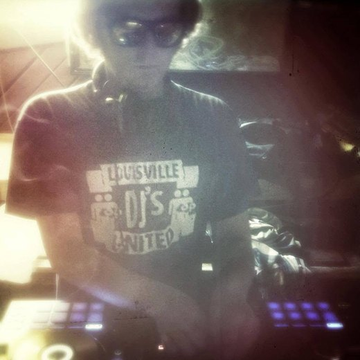

Deep · Sexy · Funky · Underground
UNKLE
FUNK
Deep, funky house from a Midwestern mailman finishing 75 tracks.
75 DEEP · …/75
01 — The Mission
75 Deep.
25 years of house music trapped in 75 unfinished tracks. A mail route that eats 15 hours a day. So I built my own AI tools to finish them all — and I'm doing it in public.
To be clear — these aren't tools that write the music for me. Every note, chord, and groove is still built by hand; the tools just clear out the admin. Top artists have engineers, assistants, and A&R teams handling the busywork behind a record. I don't have that budget, so I built my own version in Ableton — templates and AI-assisted workflows that handle the repetitive production overhead, so the time I do have goes straight into the part that actually matters: turning twenty-five years of feeling into something that still echoes after the lights come up.
Every track gets finished and released — either through one of a handful of labels I'd be proud to call home, or self-released if that's how it goes. Either way, there's no secret vault and no special access. This isn't about riding an algorithm. It's about a lifetime of music that's been stuck in my head, finally getting out.
This isn't a comeback story. It's a finishing story. If you've ever had something half-done sitting on a hard drive for years, this one's for you.
02 — The Chart
What's spinning right now.
Ten tracks, hand-picked, updated regularly. Not a curated best-of — the actual chart.
Beatport DJ Chart
03 — The Music
Nothing's finished. Everything's moving.
These are works in progress. Tell me what one of them needs — you might be the reason it gets finished next. Full back catalog on SoundCloud and Beatport.
-
Work in progress
Untitled — what's it missing?
-
Work in progress
Untitled — vocal or no vocal?
-
Work in progress
Untitled — needs a hook
-
Work in progress
Untitled — early sketch
…/75
Finished so far. Every WIP above is a candidate for the next one.
04 — About
The mailman with the record bag.
Unkle Funk makes deep, sexy, funky underground house — the warm, late-night kind built for the floor, not the algorithm. DJing since 2001 — twenty-five years behind the decks — and fifteen years in the studio, with releases on Soulsupplement Records, Wulfpack, and DOIN' WORK Records.

In 2010 he launched Sunday Slackin', a weekly showcase of exclusive mixes from DJs and producers around the world. Over nine seasons it pulled in real house heavyweights — including a mix from the late, legendary Paul Johnson, plus exclusives from Dantiez Saunderson, Corduroy Mavericks, Stranger Danger, and many more — and became one of underground house's most consistent independent platforms.

Then life did what life does. These days he's a mailman somewhere in the Midwest, walking a route that eats fifteen hours a day — with twenty-five years of house music sitting in 75 unfinished tracks. So he built his own AI tools to finish them, every one, in public. Not for the algorithm. Because unfinished music is a weight, and finishing it is the healing.

Sunday Slackin' — the live show. Coming back.
05 — Connect
Bookings, labels, and the list.
Follow the 75
One email when a track crosses the line. No noise, no spam, unsubscribe anytime.